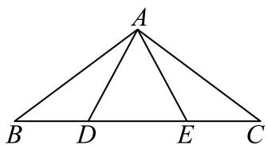
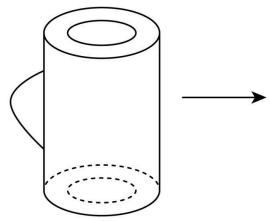
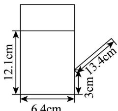
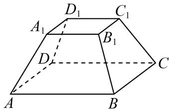

01 【来源：26春考回忆·1】
查看所属专题已知集合 ，，若 ，则 ______。
作答区
整卷阅读 · 学生版 · 21 题
按来源题号排列；内容来自分类汇编，仍需回源核对。
没有找到匹配题目。
已知集合 ，，若 ，则 ______。
关于 的不等式 的解集为______。
已知 ，，若 ，则 ______。
在平面直角坐标系中，点 到直线 的距离为______。
的二项展开式中， 的系数为______。
若 ，，且 ，则 的最大值是______。
在 5 个人中选 3 个人去演讲，若甲一定去，则一共有______种选法。
已知点 为抛物线 上一点，若点 到 的焦点的距离是 到 轴的距离的两倍，则点 的横坐标是______。
已知 ，对于所有满足 的复数 ，都有 的最小值与 的最小值相同，则 ______。
在 中， 在边 上，且 ，， 与 所成的夹角为 ，则 的最大值为______。

已知椭圆 与椭圆 相交于 四点，且与 和 的四个焦点在同一个圆上，则 ______。
有一个油壶，壶身视为圆柱，壶嘴视为直线且不计容积，壶底直径 6.4 厘米，壶身高 16 厘米，壶内油液面高 12.1 厘米，壶嘴长 13.4 厘米，与壶身夹角为 ，壶嘴最低点距壶底 3 厘米，将壶身向壶嘴方向至少转______度可使油倒出（精确到 ）。


下列数列中是等差数列也是等比数列的是（ ）。
A.
B.
C.
D.
已知 ，则下列不等式恒成立的是（ ）。
A.
B.
C.
D.
平移对称法在几何学中具有重要的应用。设平面直角坐标系 中有一图形 ，过 内任意一点 作垂直于 轴的直线 ，满足 为一线段。现沿 方向平移这些线段，使得它们的中点均在 轴上，这样叫做平移对称法。对于 、、直线 和直线 围成的封闭图形 ，对它进行一次平移对称，得到的图像大致为（ ）。


对于函数 ，，设 。对于点集 ，若存在 ，使得任取 ，总有 ，则称 为“最低点”。对于函数 和 ，以下说法中正确的是（ ）。
A. 若 和 都有最小值，则 有最低点；
B. 若 有最低点，则 和 都有最小值；
C. 若 或 有最小值，则 有最低点；
D. 若 有最低点，则 或 有最小值。
某兴趣班共 150 人，年龄分布及兴趣爱好统计如下：
| 年龄 | 剪纸 | 摄影 | 画画 | 人数 |
|---|---|---|---|---|
| 8 | 45 | |||
| 10 | 55 | |||
| 6 | 50 |
（1）现采用分层抽样抽取 30 人，其中抽到年龄在 岁的有多少人？
（2）该兴趣班 150 人的平均年龄是多少？
（3）现从 150 人中任意抽选 1 人，记抽到的学员年龄在 为事件 ，记抽到学员爱好摄影为事件 。事件 与 是否独立？请说明理由。
如图所示正四棱台 ，其中 ，。

（1）当 时，求 和平面 所成角；
（2）证明： 平面 ；若棱台高为 3，求三棱锥 的体积。
已知函数 。
（1）当 ，，求函数 在 处的切线方程；
（2）若函数 的最小正周期为 ，且 在 上恰好有 1351 个解，求 的取值范围。
已知双曲线 ，过点 作不垂直于 轴的直线 交双曲线 于 两点。
（1）求双曲线离心率；
（2）若点 ，点 在双曲线的右支上，且 是 的中点，求直线 的斜率；
（3）若 ， 分别是双曲线 的左右焦点， 是 关于 轴的对称点，若存在直线 使得 ，求 的取值范围。
设 是定义在 上的函数。定义性质 ：若对任意 ，当 时，，则称函数 具有“性质 ”。
（1）判断函数 是否具有“性质 ”；
（2）若分段函数 具有“性质 ”，求所有满足条件的实数 和 的解；
（3）已知 的值域为 ，且在 上是严格增函数，证明： 是偶函数的充要条件是 具有“性质 ”。